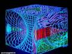
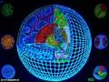
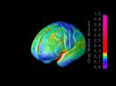
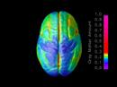

We have shown that acute LSD treatment increases expression of a small set of genes in the mammalian brain that are involved in a wide array of cellular functions.

These apparently divergent pathways may then alter synaptic plasticity, glutamatergic signaling, cytoskeletal architecture and perhaps communication between the synapse and nucleus. Within the nucleus, complex patterns of gene expression may be initiated by induction of several different classes of transcription factors. The finding that the expression profiles for some of these genes differed between the prefrontal cortex, hippocampus and thalamic regions of the brain suggest the involvement of different receptor subtypes, with regionalized localization mediating gene expression. Clearly, the range of cellular functions that are regulated by the genes identified in this study begins to give a much broader perspective to understanding how a drug like LSD actually works.

Seven genes have been identified that are differentially expressed after acute treatment with the hallucinogen LSD...The number of candidate genes identified in the microarray screen was surprisingly small, suggesting that relatively minor changes in cellular physiology may lead to marked changes in cognitive function...The differentially expressed genes after acute LSD treatment encode for a variety of proteins, including:
The c-fos gene is rapidly upregulated by many stimulatory pathways and is often used as a marker to determine general neuronal activation...Levels of c-fos increased approximately twofold in all areas of the brain examined in response to acute LSD, suggesting that LSD activates many brain areas.
Krox-20 has been shown to be necessary for normal brain development...and may be involved in the maintenance of long-term potentiation.
NOR1, a nuclear receptor of the steroid/thyroid family...Interestingly, recent reports have suggested that NOR1 may be involved in the response to opiates and cocaine.
In addition to nuclear transcription factors, genes encoding for other classes of proteins were induced by LSD administration:
arc (activity-regulated cytoskeleton-associated protein). Arc is classified as an immediate early gene because of its rapid induction after stimulation...Arc protein and mRNA are both specifically localized to dendrites, and arc is predicted to be involved in cytoskeletal rearrangements during the process of synaptic plasticity.
 LSD produced a robust fivefold increase in arc expression in the prefrontal cortex, similar to that seen with the hallucinogenic drug 1-(2,5-dimethoxy-4-iodophenyl)-2-aminopropane.
Arc gene expression was not increased in the hippocampus by LSD and was not detectable in the midbrain region. This region-specific effect is fascinating in light of the high density of 5-HT2A receptors localized on apical dendrites of pyramidal neurons in the prefrontal cortex... These receptors have been proposed to be the principal targets for hallucinogenic drugs... It is tempting to speculate that upregulation of two genes encoding proteins (arc and Krox-20) linked to synaptic plasticity may represent early sequelae in the pathways that lead to some reported long term effects of LSD use such as Hallucinogen Persisting Perception Disorder..., and the apparent effectiveness of LSD in the treatment of disorders such as alcohol addiction.
Iκβ-α (I kappa beta alpha) is the main inhibitor of NFκβ, the activating component of the immune response. It is not clear why LSD activates expression of an immune suppressor gene. An intriguing report recently showed that Iκβ-α is found in the cell bodies and processes of neurons and specifically localizes to the postsynaptic densities, along with NFκβ... The authors hypothesized that the postsynaptically localized Iκβ-α and NFκβ act as messenger molecules that travel from the synapse to the nucleus.

Serum glucocorticoid kinase (sgk) is another signaling molecule that is transcriptionally regulated by a variety of stimuli including glucocorticoids, p53, and cell injury... LSD induced a twofold expression of the sgk gene in all three regions examined around two fold...sgk is a survival kinase, as the expression of sgk correlates directly with protection against apoptosis in certain cell lines...it has been suggested to...lead to the promotion of cell survival.
Ania3 is the most intriguing transcript that is differentially expressed in light of recent electrophysiological studies implicating glutamate receptors in the mechanism of action of hallucinogenic drugs...Upregulation of ania3 provides a molecular link between hallucinogens and glutamate receptor signaling.